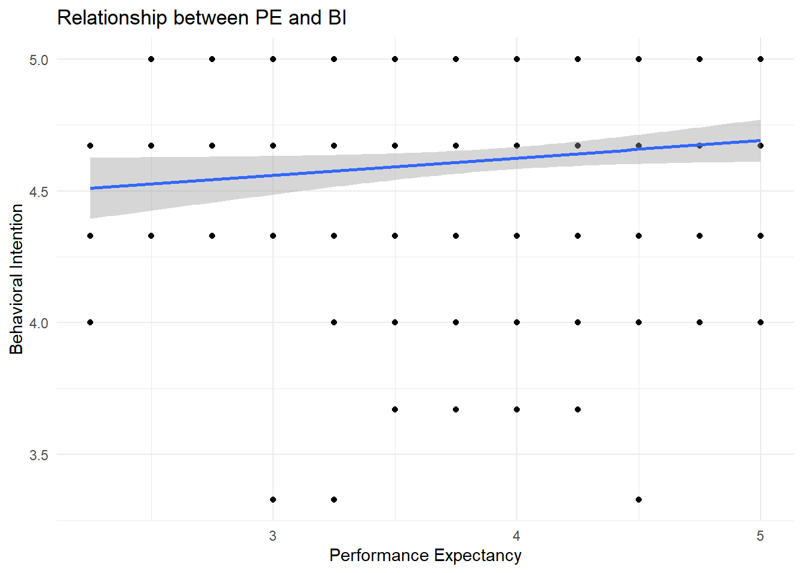
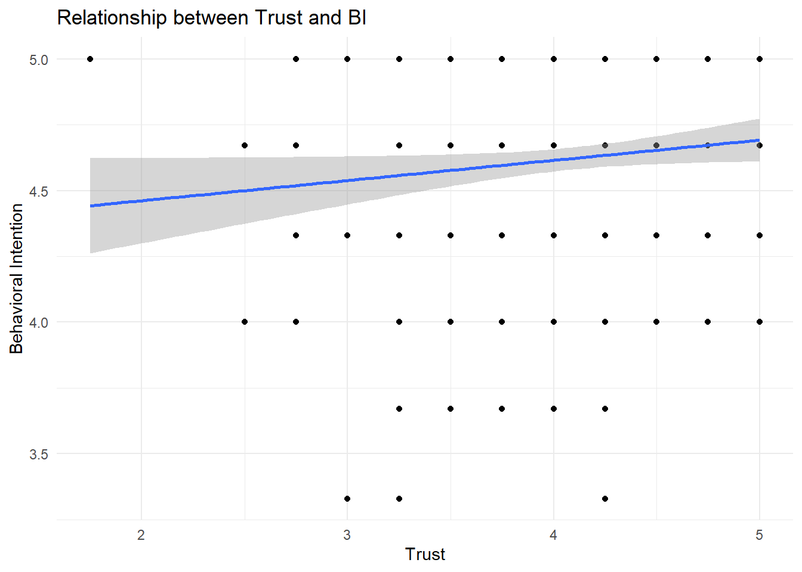
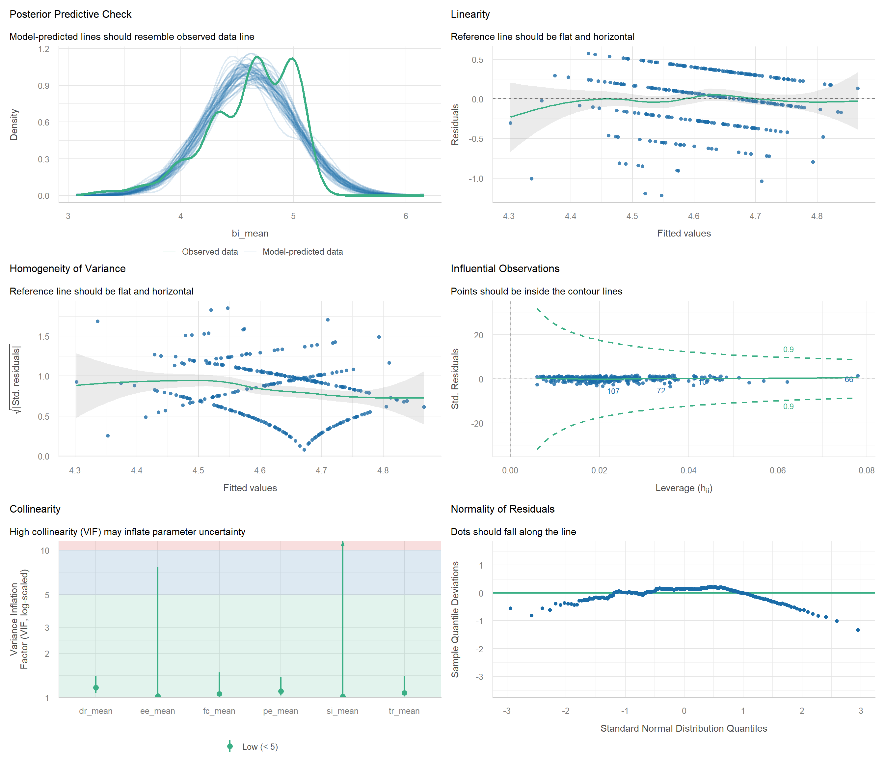
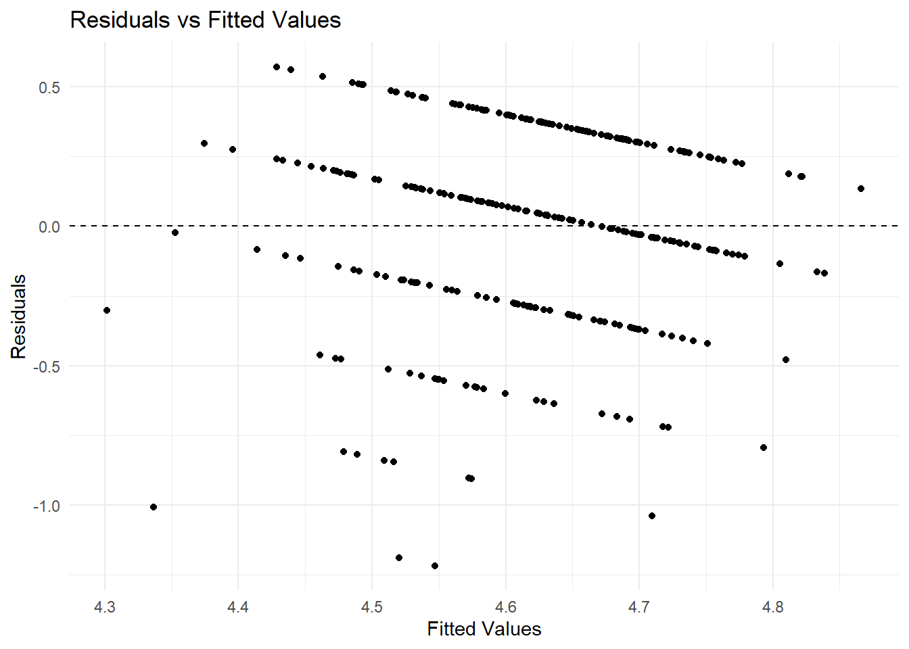
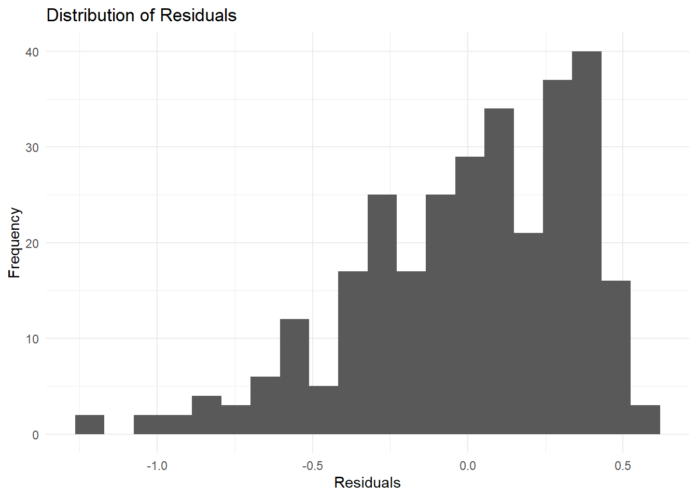
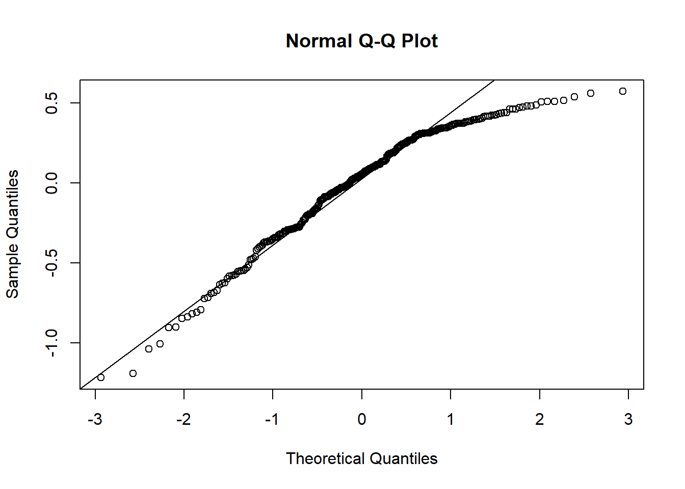

install.packages("tidyverse")
install.packages("readxl")
install.packages("janitor")
install.packages("car")
install.packages("performance")
install.packages("gtsummary")
install.packages("broom")
install.packages("gt")Module 4. Tương quan, Hồi quy và Dự đoán trong Nghiên cứu
Tổng quan Module
TipLearning Outcomes
Sau khi hoàn thành Module 4, học viên có thể:
- Hiểu sự khác biệt giữa correlation và causation
- Thực hiện phân tích tương quan Pearson và Spearman
- Đọc và diễn giải ma trận tương quan
- Trực quan hóa tương quan giữa các biến
- Xây dựng mô hình hồi quy tuyến tính đơn
- Xây dựng mô hình hồi quy tuyến tính đa biến
- Kiểm tra đa cộng tuyến bằng VIF
- Kiểm tra giả định hồi quy
- Dự đoán
bi_meantừ các biến nghiên cứu - Viết kết quả hồi quy theo chuẩn học thuật
NoteModule Logic
Module này trả lời câu hỏi:
Những yếu tố nào dự đoán Behavioral Intention và chúng ta diễn giải kết quả hồi quy như thế nào trong nghiên cứu khoa học?
Workflow:
Dữ liệu sạch
↓
Tương quan
↓
Hồi quy đơn giản
↓
Hồi quy đa biến
↓
Chẩn đoán mô hình
↓
Dự đoán
↓
Báo cáo học thuật4.1 Why Regression Matters?
NoteKnowledge Notes
What?
Hồi quy là phương pháp dùng để kiểm tra mối quan hệ giữa một biến phụ thuộc và một hoặc nhiều biến độc lập.
Why?
Trong nghiên cứu định lượng, hồi quy giúp trả lời:
- Biến nào có liên quan đến outcome?
- Biến nào là predictor mạnh hơn?
- Mô hình giải thích được bao nhiêu phần trăm biến thiên?
- Có thể dự đoán outcome từ các predictor không?
When?
Dùng hồi quy khi outcome là biến định lượng, ví dụ:
Behavioral Intention
GPA
Satisfaction
Adoption Score
Performance ScoreHow do we use it in research?
Hồi quy thường dùng trong:
- UTAUT
- TAM
- TPB
- Educational research
- Adoption studies
- Behavioral intention studies
- Survey-based research
ImportantResearch Application
Trong khóa học này, mô hình hồi quy chính là:
bi_mean ~ pe_mean + ee_mean + si_mean + fc_mean + dr_mean + tr_meanÝ nghĩa nghiên cứu:
Ý định hành vi
↑
Kỳ vọng về hiệu suất
Kỳ vọng về nỗ lực
Ảnh hưởng xã hội
Điều kiện thuận lợi
Sự sẵn sàng về kỹ thuật số
Niềm tin
WarningCommon Mistakes
Người học thường mắc lỗi:
- Diễn giải tương quan thành quan hệ nhân quả
- Chỉ nhìn p-value mà bỏ qua effect size
- Không kiểm tra đa cộng tuyến
- Không kiểm tra giả định hồi quy
- Không báo cáo R-squared
- Không giải thích ý nghĩa thực tiễn của hệ số hồi quy
4.2 Load Packages
NoteKnowledge Notes
What?
Module này sử dụng các package phục vụ phân tích tương quan, hồi quy, kiểm tra giả định và trình bày bảng kết quả.
Main packages
tidyverse: xử lý dữ liệu và biểu đồreadxl: đọc file Exceljanitor: làm sạch tên biếncar: kiểm tra VIF và Durbin-Watsonperformance: kiểm tra giả định mô hìnhgtsummary: tạo bảng hồi quybroom: chuyển output mô hình thành bảng
Install Packages
Load Packages
library(tidyverse)
library(readxl)
library(janitor)
library(car)
library(performance)
library(gtsummary)
library(broom)
library(gt)4.3 Import Clean Dataset
NoteKnowledge Notes
What?
Module 4 sử dụng dữ liệu sạch từ Module 2.
When?
Sau khi đã hoàn thành data cleaning và descriptive statistics.
How?
Ưu tiên đọc:
output/03_Clean_Data.xlsxNếu chưa có file này, hệ thống đọc sheet 03_Clean_Data trong file demo ban đầu.
if (file.exists("output/03_Clean_Data.xlsx")) {
data <- read_excel("output/03_Clean_Data.xlsx")
} else {
data <- read_excel(
"data/FPT_PolySchool_R_Training_Demo_Dataset.xlsx",
sheet = "03_Clean_Data"
)
}
data <- data |>
clean_names()Check Data
glimpse(data)Rows: 300
Columns: 49
$ id <chr> "ST001", "ST002", "ST003", "ST004", "ST005", "ST006", "…
$ gender <chr> "Female", "Male", "Female", "Male", "Female", "Female",…
$ age <dbl> 24, 20, 22, 21, 24, 18, 24, 19, 23, 20, 24, 23, 24, 22,…
$ major <chr> "Graphic Design", "Digital Marketing", "Digital Marketi…
$ year_study <dbl> 3, 2, 1, 3, 2, 1, 2, 3, 3, 1, 3, 2, 2, 2, 2, 1, 1, 3, 1…
$ campus <chr> "Da Nang", "Da Nang", "Ho Chi Minh", "Da Nang", "Can Th…
$ gpa <dbl> 7.87, 5.76, 7.60, 6.17, 8.83, 7.35, 6.60, 7.83, 7.50, 6…
$ internet_hours <dbl> 7.2, 3.9, 6.3, 8.3, 3.5, 6.1, 6.9, 7.1, 3.2, 5.2, 6.0, …
$ smartphone_use <dbl> 5, 3, 1, 1, 1, 1, 1, 1, 3, 3, 4, 4, 2, 4, 3, 2, 3, 4, 1…
$ lms_use <dbl> 4, 3, 2, 3, 5, 2, 3, 2, 3, 1, 2, 1, 2, 1, 4, 5, 4, 4, 5…
$ ai_experience <dbl> 0, 2, 3, 1, 2, 1, 3, 3, 0, 2, 4, 2, 4, 3, 2, 4, 2, 1, 1…
$ pe1 <dbl> 3, 3, 4, 4, 4, 3, 4, 3, 4, 3, 4, 5, 4, 4, 4, 4, 4, 3, 2…
$ pe2 <dbl> 4, 2, 4, 3, 4, 3, 4, 4, 5, 2, 4, 2, 3, 3, 2, 4, 4, 2, 2…
$ pe3 <dbl> 3, 1, 4, 3, 4, 2, 4, 5, 4, 3, 3, 2, 2, 4, 3, 4, 5, 4, 3…
$ pe4 <dbl> 2, 3, 3, 3, 3, 2, 3, 3, 5, 4, 4, 5, 3, 4, 4, 3, 5, 4, 4…
$ ee1 <dbl> 3, 4, 2, 4, 5, 4, 3, 4, 4, 4, 3, 4, 4, 4, 3, 3, 4, 3, 4…
$ ee2 <dbl> 4, 3, 3, 3, 3, 3, 4, 5, 3, 3, 4, 4, 3, 5, 3, 3, 4, 2, 2…
$ ee3 <dbl> 4, 4, 3, 3, 4, 4, 4, 5, 4, 4, 4, 4, 4, 5, 5, 4, 3, 4, 4…
$ ee4 <dbl> 2, 3, 3, 4, 2, 4, 4, 3, 3, 5, 3, 3, 3, 4, 4, 3, 4, 3, 3…
$ si1 <dbl> 3, 3, 4, 2, 2, 2, 2, 5, 5, 3, 1, 3, 2, 4, 2, 1, 2, 4, 3…
$ si2 <dbl> 4, 1, 5, 1, 1, 3, 4, 3, 4, 3, 1, 3, 3, 2, 2, 2, 2, 4, 3…
$ si3 <dbl> 3, 1, 4, 2, 3, 2, 1, 3, 5, 3, 2, 4, 2, 3, 4, 3, 3, 2, 2…
$ si4 <dbl> 3, 4, 4, 3, 2, 2, 4, 4, 5, 2, 1, 2, 3, 3, 3, 2, 3, 3, 2…
$ fc1 <dbl> 3, 2, 3, 4, 1, 4, 4, 2, 2, 1, 3, 3, 4, 4, 4, 4, 3, 4, 4…
$ fc2 <dbl> 4, 3, 3, 2, 2, 4, 4, 2, 4, 3, 2, 2, 3, 4, 4, 3, 3, 4, 5…
$ fc3 <dbl> 4, 2, 3, 4, 3, 3, 5, 2, 3, 1, 2, 3, 2, 2, 4, 3, 4, 4, 5…
$ fc4 <dbl> 4, 2, 3, 3, 4, 4, 5, 2, 3, 1, 2, 4, 2, 3, 3, 5, 2, 4, 4…
$ dr1 <dbl> 3, 5, 4, 4, 4, 1, 3, 5, 4, 4, 4, 5, 4, 2, 5, 3, 4, 4, 4…
$ dr2 <dbl> 4, 5, 3, 2, 4, 2, 4, 4, 4, 2, 4, 4, 3, 2, 5, 3, 2, 3, 4…
$ dr3 <dbl> 4, 3, 4, 3, 4, 5, 2, 4, 2, 2, 5, 4, 5, 3, 4, 5, 4, 4, 4…
$ dr4 <dbl> 2, 4, 3, 2, 4, 3, 3, 4, 4, 2, 5, 3, 4, 3, 3, 3, 3, 4, 2…
$ tr1 <dbl> 3, 5, 5, 4, 4, 4, 4, 4, 4, 2, 5, 3, 5, 3, 4, 4, 4, 5, 3…
$ tr2 <dbl> 3, 3, 5, 4, 5, 5, 4, 5, 4, 3, 5, 4, 5, 3, 3, 5, 2, 5, 4…
$ tr3 <dbl> 4, 4, 4, 3, 3, 3, 5, 4, 3, 5, 5, 5, 3, 4, 4, 4, 4, 4, 3…
$ tr4 <dbl> 3, 5, 3, 4, 4, 3, 5, 4, 4, 3, 5, 4, 4, 4, 4, 4, 4, 5, 4…
$ bi1 <dbl> 4, 5, 4, 5, 4, 4, 5, 5, 5, 3, 5, 5, 4, 5, 4, 4, 5, 3, 5…
$ bi2 <dbl> 5, 5, 4, 3, 5, 5, 4, 4, 5, 3, 5, 5, 5, 4, 5, 5, 4, 5, 4…
$ bi3 <dbl> 5, 4, 5, 4, 5, 5, 4, 5, 5, 4, 5, 5, 5, 5, 5, 5, 5, 5, 5…
$ au1 <dbl> 3, 4, 3, 3, 4, 1, 3, 3, 5, 3, 3, 5, 5, 5, 4, 3, 5, 5, 5…
$ au2 <dbl> 4, 4, 3, 3, 4, 3, 4, 4, 4, 2, 3, 3, 3, 4, 5, 3, 4, 4, 5…
$ au3 <dbl> 3, 5, 4, 2, 3, 5, 4, 3, 5, 2, 3, 4, 5, 4, 3, 3, 4, 5, 5…
$ pe_mean <dbl> 3.00, 2.25, 3.75, 3.25, 3.75, 2.50, 3.75, 3.75, 4.50, 3…
$ ee_mean <dbl> 3.25, 3.50, 2.75, 3.50, 3.50, 3.75, 3.75, 4.25, 3.50, 4…
$ si_mean <dbl> 3.25, 2.25, 4.25, 2.00, 2.00, 2.25, 2.75, 3.75, 4.75, 2…
$ fc_mean <dbl> 3.75, 2.25, 3.00, 3.25, 2.50, 3.75, 4.50, 2.00, 3.00, 1…
$ dr_mean <dbl> 3.25, 4.25, 3.50, 2.75, 4.00, 2.75, 3.00, 4.25, 3.50, 2…
$ tr_mean <dbl> 3.25, 4.25, 4.25, 3.75, 4.00, 3.75, 4.50, 4.25, 3.75, 3…
$ bi_mean <dbl> 4.67, 4.67, 4.33, 4.00, 4.67, 4.67, 4.33, 4.67, 5.00, 3…
$ au_mean <dbl> 3.33, 4.33, 3.33, 2.67, 3.67, 3.00, 3.67, 3.33, 4.67, 2…4.4 Prepare Regression Variables
NoteKnowledge Notes
What?
Hồi quy trong module này sử dụng các biến trung bình của các cấu trúc nghiên cứu.
Main variables
| Variable | Meaning |
|---|---|
bi_mean |
Behavioral Intention |
pe_mean |
Performance Expectancy |
ee_mean |
Effort Expectancy |
si_mean |
Social Influence |
fc_mean |
Facilitating Conditions |
dr_mean |
Digital Readiness |
tr_mean |
Trust |
Create Mean Variables if Needed
needed_mean_vars <- c(
"pe_mean", "ee_mean", "si_mean", "fc_mean",
"dr_mean", "tr_mean", "bi_mean", "au_mean"
)
if (!all(needed_mean_vars %in% names(data))) {
data <- data |>
mutate(
pe_mean = rowMeans(pick(pe1, pe2, pe3, pe4), na.rm = TRUE),
ee_mean = rowMeans(pick(ee1, ee2, ee3, ee4), na.rm = TRUE),
si_mean = rowMeans(pick(si1, si2, si3, si4), na.rm = TRUE),
fc_mean = rowMeans(pick(fc1, fc2, fc3, fc4), na.rm = TRUE),
dr_mean = rowMeans(pick(dr1, dr2, dr3, dr4), na.rm = TRUE),
tr_mean = rowMeans(pick(tr1, tr2, tr3, tr4), na.rm = TRUE),
bi_mean = rowMeans(pick(bi1, bi2, bi3), na.rm = TRUE),
au_mean = rowMeans(pick(au1, au2, au3), na.rm = TRUE)
)
}Select Regression Dataset
reg_data <- data |>
select(
bi_mean,
pe_mean,
ee_mean,
si_mean,
fc_mean,
dr_mean,
tr_mean
) |>
drop_na()glimpse(reg_data)Rows: 300
Columns: 7
$ bi_mean <dbl> 4.67, 4.67, 4.33, 4.00, 4.67, 4.67, 4.33, 4.67, 5.00, 3.33, 5.…
$ pe_mean <dbl> 3.00, 2.25, 3.75, 3.25, 3.75, 2.50, 3.75, 3.75, 4.50, 3.00, 3.…
$ ee_mean <dbl> 3.25, 3.50, 2.75, 3.50, 3.50, 3.75, 3.75, 4.25, 3.50, 4.00, 3.…
$ si_mean <dbl> 3.25, 2.25, 4.25, 2.00, 2.00, 2.25, 2.75, 3.75, 4.75, 2.75, 1.…
$ fc_mean <dbl> 3.75, 2.25, 3.00, 3.25, 2.50, 3.75, 4.50, 2.00, 3.00, 1.50, 2.…
$ dr_mean <dbl> 3.25, 4.25, 3.50, 2.75, 4.00, 2.75, 3.00, 4.25, 3.50, 2.50, 4.…
$ tr_mean <dbl> 3.25, 4.25, 4.25, 3.75, 4.00, 3.75, 4.50, 4.25, 3.75, 3.25, 5.…4.5 Correlation Fundamentals
NoteKnowledge Notes
What?
Correlation đo mức độ liên hệ tuyến tính giữa hai biến.
Range
-1 to +1Interpretation
| r | Meaning |
|---|---|
| 0.10 | Small |
| 0.30 | Medium |
| 0.50 | Large |
Important
Correlation does not imply causation.
Pearson Correlation Matrix
cor_matrix <- reg_data |>
cor(use = "pairwise.complete.obs")
round(cor_matrix, 3) bi_mean pe_mean ee_mean si_mean fc_mean dr_mean tr_mean
bi_mean 1.000 0.116 0.030 0.044 0.143 0.221 0.115
pe_mean 0.116 1.000 0.031 0.002 0.052 0.268 0.204
ee_mean 0.030 0.031 1.000 0.031 0.060 0.128 0.040
si_mean 0.044 0.002 0.031 1.000 -0.112 -0.021 -0.007
fc_mean 0.143 0.052 0.060 -0.112 1.000 0.202 0.059
dr_mean 0.221 0.268 0.128 -0.021 0.202 1.000 0.217
tr_mean 0.115 0.204 0.040 -0.007 0.059 0.217 1.000Correlation with BI
reg_data |>
summarise(
cor_pe = cor(bi_mean, pe_mean, use = "pairwise.complete.obs"),
cor_ee = cor(bi_mean, ee_mean, use = "pairwise.complete.obs"),
cor_si = cor(bi_mean, si_mean, use = "pairwise.complete.obs"),
cor_fc = cor(bi_mean, fc_mean, use = "pairwise.complete.obs"),
cor_dr = cor(bi_mean, dr_mean, use = "pairwise.complete.obs"),
cor_tr = cor(bi_mean, tr_mean, use = "pairwise.complete.obs")
)
WarningCommon Mistakes
Không được viết:
PE causes BI because r is significant.Nên viết:
PE was positively associated with BI.4.6 Visualize Relationships
NoteKnowledge Notes
What?
Biểu đồ giúp kiểm tra nhanh hướng và dạng quan hệ giữa hai biến.
When?
Nên vẽ trước khi chạy hồi quy.
How?
Dùng geom_point() và geom_smooth(method = "lm").
PE and BI
ggplot(reg_data, aes(x = pe_mean, y = bi_mean)) +
geom_point() +
geom_smooth(method = "lm", se = TRUE) +
labs(
title = "Relationship between PE and BI",
x = "Performance Expectancy",
y = "Behavioral Intention"
) +
theme_minimal()
Trust and BI
ggplot(reg_data, aes(x = tr_mean, y = bi_mean)) +
geom_point() +
geom_smooth(method = "lm", se = TRUE) +
labs(
title = "Relationship between Trust and BI",
x = "Trust",
y = "Behavioral Intention"
) +
theme_minimal()
4.7 Simple Linear Regression
NoteKnowledge Notes
What?
Simple linear regression kiểm tra quan hệ giữa một predictor và một outcome.
Formula
Y = a + bX + eExample
BI = a + b(PE) + eEstimate Simple Regression
model_simple <- lm(
bi_mean ~ pe_mean,
data = reg_data
)
summary(model_simple)
Call:
lm(formula = bi_mean ~ pe_mean, data = reg_data)
Residuals:
Min 1Q Median 3Q Max
-1.32774 -0.27845 0.04512 0.34226 0.47370
Coefficients:
Estimate Std. Error t value Pr(>|t|)
(Intercept) 4.36200 0.12987 33.587 <2e-16 ***
pe_mean 0.06572 0.03257 2.018 0.0445 *
---
Signif. codes: 0 '***' 0.001 '**' 0.01 '*' 0.05 '.' 0.1 ' ' 1
Residual standard error: 0.3686 on 298 degrees of freedom
Multiple R-squared: 0.01348, Adjusted R-squared: 0.01017
F-statistic: 4.071 on 1 and 298 DF, p-value: 0.04452Tidy Output
tidy(model_simple)Model Fit
glance(model_simple)
ImportantResearch Application
Nếu hệ số pe_mean dương và có ý nghĩa thống kê, có thể nói rằng Performance Expectancy có liên hệ tích cực với Behavioral Intention.
4.8 Multiple Regression
NoteKnowledge Notes
What?
Multiple regression kiểm tra tác động đồng thời của nhiều biến độc lập lên một biến phụ thuộc
Why?
Trong nghiên cứu hành vi, biến phụ thuộc thường chịu ảnh hưởng bởi nhiều yếu tố cùng lúc.
Model
BI = b0 + b1PE + b2EE + b3SI + b4FC + b5DR + b6TR + eEstimate Main Regression Model
model_reg <- lm(
bi_mean ~ pe_mean + ee_mean + si_mean + fc_mean + dr_mean + tr_mean,
data = reg_data
)
summary(model_reg)
Call:
lm(formula = bi_mean ~ pe_mean + ee_mean + si_mean + fc_mean +
dr_mean + tr_mean, data = reg_data)
Residuals:
Min 1Q Median 3Q Max
-1.21716 -0.25065 0.05459 0.30861 0.57155
Coefficients:
Estimate Std. Error t value Pr(>|t|)
(Intercept) 3.743015 0.245060 15.274 < 2e-16 ***
pe_mean 0.029078 0.033526 0.867 0.38648
ee_mean -0.002945 0.033349 -0.088 0.92969
si_mean 0.030278 0.028314 1.069 0.28580
fc_mean 0.055120 0.029421 1.873 0.06200 .
dr_mean 0.087671 0.030711 2.855 0.00461 **
tr_mean 0.040849 0.038940 1.049 0.29503
---
Signif. codes: 0 '***' 0.001 '**' 0.01 '*' 0.05 '.' 0.1 ' ' 1
Residual standard error: 0.361 on 293 degrees of freedom
Multiple R-squared: 0.06946, Adjusted R-squared: 0.05041
F-statistic: 3.645 on 6 and 293 DF, p-value: 0.001663Tidy Coefficients
regression_coefficients <- tidy(
model_reg,
conf.int = TRUE
)
regression_coefficientsModel Fit
model_fit <- glance(model_reg)
model_fit4.9 Regression Table
NoteKnowledge Notes
What?
Bảng hồi quy giúp trình bày hệ số, sai số chuẩn, p-value và khoảng tin cậy.
Why?
Bài báo khoa học cần bảng kết quả rõ ràng, không chỉ copy output từ R console.
reg_table <- tbl_regression(
model_reg,
intercept = TRUE
) |>
add_glance_source_note() |>
bold_labels()
reg_table| Characteristic | Beta | 95% CI | p-value |
|---|---|---|---|
| (Intercept) | 3.7 | 3.3, 4.2 | <0.001 |
| pe_mean | 0.03 | -0.04, 0.10 | 0.4 |
| ee_mean | 0.00 | -0.07, 0.06 | >0.9 |
| si_mean | 0.03 | -0.03, 0.09 | 0.3 |
| fc_mean | 0.06 | 0.00, 0.11 | 0.062 |
| dr_mean | 0.09 | 0.03, 0.15 | 0.005 |
| tr_mean | 0.04 | -0.04, 0.12 | 0.3 |
| Abbreviation: CI = Confidence Interval | |||
| R² = 0.069; Adjusted R² = 0.050; Sigma = 0.361; Statistic = 3.65; p-value = 0.002; df = 6; Log-likelihood = -116; AIC = 249; BIC = 279; Deviance = 38.2; Residual df = 293; No. Obs. = 300 | |||
TipKey Points
Một bảng hồi quy tốt nên có:
- Coefficient
- Confidence interval
- p-value
- R-squared
- Sample size
- Model notes
4.10 Interpreting Regression Coefficients
NoteKnowledge Notes
Estimate
Mức thay đổi kỳ vọng của outcome khi biến độc lập tăng 1 đơn vị, giữ các biến khác không đổi.
p-value
Cho biết bằng chứng thống kê về việc hệ số khác 0.
R-squared
Tỷ lệ phương sai của biến phụ thuộc được giải thích bởi mô hình.
Extract Coefficients
coef(summary(model_reg)) Estimate Std. Error t value Pr(>|t|)
(Intercept) 3.743015125 0.24505978 15.27388621 3.796668e-39
pe_mean 0.029077584 0.03352607 0.86731265 3.864805e-01
ee_mean -0.002944882 0.03334867 -0.08830583 9.296939e-01
si_mean 0.030277775 0.02831441 1.06934173 2.857959e-01
fc_mean 0.055120161 0.02942106 1.87349351 6.199559e-02
dr_mean 0.087670693 0.03071066 2.85473176 4.614766e-03
tr_mean 0.040848834 0.03893984 1.04902425 2.950315e-01Extract R-squared
summary(model_reg)$r.squared[1] 0.06946302Extract Adjusted R-squared
summary(model_reg)$adj.r.squared[1] 0.05040766
WarningCommon Mistakes
Không nên chỉ viết:
PE is significant.Nên viết:
PE was positively associated with BI, suggesting that higher perceived performance benefits were linked to stronger behavioral intention.4.11 Multicollinearity Check
NoteKnowledge Notes
What?
Multicollinearity xảy ra khi các biến độc lập tương quan quá cao với nhau.
Why?
Đa cộng tuyến có thể làm hệ số hồi quy không ổn định.
How?
Dùng VIF.
VIF
car::vif(model_reg) pe_mean ee_mean si_mean fc_mean dr_mean tr_mean
1.104360 1.019487 1.014267 1.057413 1.166454 1.075802 VIF Interpretation
| VIF | Interpretation |
|---|---|
| < 3 | Good |
| 3–5 | Acceptable but check |
| > 5 | Potential problem |
| > 10 | Serious problem |
WarningCommon Mistakes
Không nên bỏ qua VIF khi các biến độc lập đều là các thang đo có liên quan gần nhau, như PE, EE, SI, FC, DR và TR.
4.12 Regression Assumptions
NoteKnowledge Notes
What?
Hồi quy tuyến tính có các giả định quan trọng:
- Linearity
- Independence
- Homoscedasticity
- Normality of residuals
- No serious multicollinearity
- No influential outliers
Why?
Nếu giả định bị vi phạm nghiêm trọng, kết quả hồi quy có thể không đáng tin cậy.
Check Model
performance::check_model(model_reg)
4.13 Residual Diagnostics
NoteKnowledge Notes
What?
Residual là phần sai khác giữa giá trị quan sát và giá trị dự đoán.
Why?
Kiểm tra residual giúp đánh giá mô hình có phù hợp không.
Add Residuals and Fitted Values
diagnostic_data <- reg_data |>
mutate(
fitted_values = fitted(model_reg),
residuals = residuals(model_reg)
)Residuals vs Fitted
ggplot(diagnostic_data, aes(x = fitted_values, y = residuals)) +
geom_point() +
geom_hline(yintercept = 0, linetype = "dashed") +
labs(
title = "Residuals vs Fitted Values",
x = "Fitted Values",
y = "Residuals"
) +
theme_minimal()
Histogram of Residuals
ggplot(diagnostic_data, aes(x = residuals)) +
geom_histogram(bins = 20) +
labs(
title = "Distribution of Residuals",
x = "Residuals",
y = "Frequency"
) +
theme_minimal()
Q-Q Plot
qqnorm(diagnostic_data$residuals)
qqline(diagnostic_data$residuals)
4.14 Additional Assumption Tests
Normality of Residuals
performance::check_normality(model_reg)Warning: Non-normality of residuals detected (p < .001).Heteroscedasticity
performance::check_heteroscedasticity(model_reg)Warning: Heteroscedasticity (non-constant error variance) detected (p < .001).Outliers
performance::check_outliers(model_reg)OK: No outliers detected.
- Based on the following method and threshold: cook (0.909).
- For variable: (Whole model)
WarningCommon Mistakes
Với mẫu lớn, kiểm định thống kê có thể rất nhạy.
Cần kết hợp:
- Biểu đồ
- Kiểm định
- Kiến thức thực tế
- Mục tiêu nghiên cứu
4.15 Prediction
NoteKnowledge Notes
What?
Prediction dùng mô hình hồi quy đã ước lượng để dự đoán giá trị outcome cho trường hợp mới.
When?
Dùng khi muốn ước lượng Behavioral Intention dựa trên mức PE, EE, SI, FC, DR và TR.
Create New Data
new_case <- tibble(
pe_mean = 4.2,
ee_mean = 3.8,
si_mean = 3.5,
fc_mean = 4.0,
dr_mean = 4.1,
tr_mean = 4.3
)Predict BI
predict(
model_reg,
newdata = new_case,
interval = "confidence"
) fit lwr upr
1 4.715503 4.647296 4.78371
ImportantResearch Application
Prediction hữu ích khi muốn minh họa mô hình cho một hồ sơ người học hoặc người dùng cụ thể.
Tuy nhiên, prediction không đồng nghĩa với quan hệ nhân quả.
4.16 Model Comparison
NoteKnowledge Notes
What?
Model comparison giúp xem mô hình nào giải thích outcome tốt hơn.
Why?
Trong nghiên cứu, ta có thể so sánh mô hình cơ bản và mô hình mở rộng.
Model 1: PE and EE
model_1 <- lm(
bi_mean ~ pe_mean + ee_mean,
data = reg_data
)Model 2: Add SI and FC
model_2 <- lm(
bi_mean ~ pe_mean + ee_mean + si_mean + fc_mean,
data = reg_data
)Model 3: Full Model
model_3 <- lm(
bi_mean ~ pe_mean + ee_mean + si_mean + fc_mean + dr_mean + tr_mean,
data = reg_data
)Compare R-squared
model_comparison <- tibble(
model = c("Model 1", "Model 2", "Model 3"),
r_squared = c(
summary(model_1)$r.squared,
summary(model_2)$r.squared,
summary(model_3)$r.squared
),
adj_r_squared = c(
summary(model_1)$adj.r.squared,
summary(model_2)$adj.r.squared,
summary(model_3)$adj.r.squared
)
)
model_comparison4.17 Academic Reporting
NoteKnowledge Notes
What?
Academic reporting là cách chuyển output thống kê thành diễn giải học thuật.
Why?
Bài báo cần giải thích ý nghĩa kết quả, không chỉ trình bày bảng.
Correlation Template
Performance Expectancy was positively associated with Behavioral Intention (r = ..., p = ...), suggesting that respondents who perceived higher performance benefits tended to report stronger behavioral intention.Regression Template
A multiple linear regression was conducted to examine the predictors of Behavioral Intention. The model included Performance Expectancy, Effort Expectancy, Social Influence, Facilitating Conditions, Digital Readiness, and Trust as predictors. The model explained ...% of the variance in Behavioral Intention. Among the predictors, ... was significantly associated with Behavioral Intention.Non-significant Predictor Template
The effect of [predictor] on Behavioral Intention was not statistically significant (β = ..., p = ...), suggesting that this factor may not be a key predictor in the current sample.
WarningCommon Mistakes
Không nên viết:
PE affects BInếu thiết kế nghiên cứu là khảo sát cắt ngang.
Nên viết:
PE was associated with BI4.18 Export Results
Để tránh lỗi khi render website, các lệnh xuất file được đặt eval: false.
Export Regression Table
reg_table |>
as_gt() |>
gt::gtsave("output/module4_regression_table.html")Export Model Comparison
write_csv(
model_comparison,
"output/module4_model_comparison.csv"
)Practice Exercise
ImportantPractice Exercise
Sử dụng bộ dữ liệu sạch, hãy thực hiện:
- Tạo ma trận tương quan giữa các biến trung bình.
- Vẽ biểu đồ quan hệ giữa
pe_meanvàbi_mean. - Chạy hồi quy đơn:
bi_mean ~ pe_mean. - Chạy hồi quy đa biến:
bi_mean ~ pe_mean + ee_mean + si_mean + fc_mean + dr_mean + tr_mean. - Kiểm tra VIF.
- Kiểm tra phần dư.
- Kiểm tra phương sai thay đổi.
- Kiểm tra phân phối chuẩn của phần dư.
- Dự đoán
bi_meancho một trường hợp mới. - Viết đoạn diễn giải kết quả.
Challenge
WarningChallenge
Câu hỏi
Trong mô hình:
bi_mean ~ pe_mean + ee_mean + si_mean + fc_mean + dr_mean + tr_meanhãy xác định:
- Biến nào có hệ số lớn nhất?
- Biến nào có ý nghĩa thống kê?
- Mô hình giải thích được bao nhiêu phần trăm phương sai của
bi_mean? - Có vấn đề đa cộng tuyến không?
- Có nên diễn giải kết quả này là nhân quả không?
TipSuggested Solution
Một câu trả lời tốt cần dựa trên:
summary(model_reg)tbl_regression(model_reg)car::vif(model_reg)performance::check_model(model_reg)- R-squared và adjusted R-squared
Không nên diễn giải nhân quả nếu dữ liệu là khảo sát cắt ngang.
Mini Project 4
ImportantMini Project 4
Chủ đề
Regression Analysis Report
Sản phẩm đầu ra
Học viên cần tạo:
Module4_Regression_Report.htmlNội dung báo cáo
- Research model
- Correlation matrix
- Scatterplots
- Simple regression
- Multiple regression
- Regression table
- VIF table
- Model diagnostics
- Prediction example
- Academic interpretation
- Conclusion
Key Takeaways
TipKey Points
- Correlation không đồng nghĩa với causation.
- Regression giúp kiểm tra các predictors của outcome.
- R-squared cho biết mức độ giải thích của mô hình.
- VIF giúp kiểm tra đa cộng tuyến.
- Residual diagnostics giúp đánh giá giả định mô hình.
- Prediction có thể hữu ích nhưng không nên bị hiểu là quan hệ nhân quả.
- Kết quả hồi quy cần được diễn giải bằng ngôn ngữ học thuật rõ ràng.
What Next?
NoteWhat Next?
Sau khi hoàn thành Module 4, học viên nên:
- Lưu regression table.
- Ghi chú các biến độc lập có ý nghĩa thống kê.
- Kiểm tra VIF và giả định mô hình.
- Viết phần regression results.
- Chuyển sang Module 5. PLS-SEM bằng R.
Trong Module 5, chúng ta sẽ mở rộng từ hồi quy quan sát sang mô hình có biến tiềm ẩn:
PE, EE, SI, FC, DR, TR → BI → AU